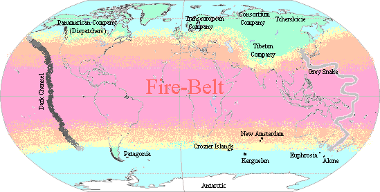

La Terre après le réchauffement, en 2390
Avertissement : cette carte est une interprétation personnelle de ma lecture des Compagnie des Glaces (Nouvelle Epoque). Elle n'est donc pas exempte d'erreurs.
Carte de l'hémisphère Nord

Carte de l'hémisphère Sud